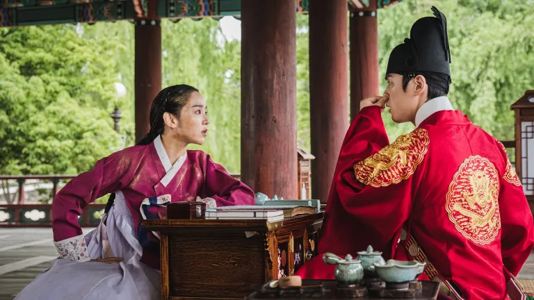

"Sr. Rainha" ("Mr. Queen") é um dorama sul-coreano popular que mistura elementos de
comédia, drama e fantasia.A série gira em torno de um homem moderno, um chef na
Casa Azul (a residência presidencial da Coreia do Sul), que de repente se vê no
corpo de uma rainha da dinastia Joseon. Esta rainha, chamada Kim So-yong, está
casada com o rei Cheoljong, que parece ser um monarca dócil e inofensivo, mas
esconde sua personalidade forte e suas intenções secretas.
O enredo explora as hilárias e às vezes tocantes tentativas do chef, agora preso
no corpo da rainha, de navegar pelos intricados e perigosos corredores do palácio
real, enquanto tenta encontrar uma maneira de voltar para o seu próprio tempo.
Ao longo do caminho, ele lida com as intrigas políticas, amizades e até sentimentos
românticos que desafiam suas percepções e valores modernos.
"Sr. Rainha" é conhecido por sua abordagem cômica e moderna dos dramas históricos,
além de explorar temas de identidade, poder e o choque cultural entre o passado
e o presente.

A cena em questão é uma das mais divertidas e memoráveis do dorama "Sr. Rainha".
"Sr. Rainha": Um Toque Moderno no Drama Histórico Coreano
"Sr. Rainha" é um dorama sul-coreano que desafia as convenções do gênero
histórico ao introduzir um elemento surpreendentemente moderno e cômico
em sua trama. Esta série, lançada em 2020, rapidamente cativou o público
com sua mistura única de humor, drama e fantasia.
Sinopse Inusitada
A história começa com um acidente bizarro que transporta a mente
de um chef de cozinha da moderna Coreia do Sul para o corpo da Rainha
Kim So-yong da era Joseon. Preso no corpo de uma mulher e em uma época
completamente diferente da sua, o chef enfrenta uma série de desafios
cômicos e dramáticos enquanto tenta manter a fachada real e desvendar
como retornar ao seu tempo.
Personagens Cativantes
O Rei Cheoljong, interpretado por Kim Jung-hyun, é uma figura complexa
que inicialmente parece ser apenas um monarca decorativo. No entanto,
ele esconde profundas camadas de astúcia e um desejo fervoroso de reformar
seu reino. A química entre o rei e a rainha, que carrega a mente de um
homem do século 21, é um dos pontos altos da série, proporcionando tanto
momentos hilários quanto toques de ternura e compreensão mútua.
Humor e Humanidade
"Sr. Rainha" se destaca por seu humor irreverente, que brinca com as
incongruências culturais entre a era Joseon e o mundo moderno. A série
utiliza esses momentos de choque cultural para explorar temas mais amplos
de identidade, poder e o papel do indivíduo na história. As cenas onde
a Rainha So-yong, com a mente de um chef, tenta aplicar seu conhecimento
moderno às intrigas palacianas são particularmente divertidas e bem
executadas.
Impacto Cultural e Recepção
A série não apenas divertiu o público, mas também provocou discussões
sobre gênero, história e modernidade. Com uma recepção calorosa tanto
pela crítica quanto pelo público, "Sr. Rainha" se firmou como um marco
na evolução dos doramas, mostrando que é possível reinventar gêneros
tradicionais com criatividade e inteligência.
Em resumo, "Sr. Rainha" é uma série que desafia expectativas e oferece uma experiência única para seus espectadores. É uma jornada hilária e tocante através do tempo, que combina com sucesso os elementos clássicos dos dramas históricos com um senso de humor moderno e perspicaz.
Avaliações no google
Drama perfeito!!! É um drama que eu estava relutante de ver porque tinha 20 eps e porque normalmente em dramas históricos eles pesam no drama do casal e acaba ficando enfadonho, mas esse não foi NADA cansativo. Pelo contrário, a história foi tão gostosa que não senti cansada de assistir nenhuma vez. E os personagens são maravilhosos, um elogio especial pro figurino da rainha que eram lindos (normalmente não presto atenção nisso nos dramas históricos, mas como aqui somos levados a reparar em tudo na rainha, os figurinos saltaram aos olhos, e que perfeitos!!!)
A química do casal foi TUDOOOO, e a história de desenvolvimento é perfeita.
Assistam porque é muito bom!!!
Nunca curti muito comédia mas essa é nota 10. Não é forçado, sai muito natural e a
atriz que faz a protagonista é mto talentosa. É um romance mto fofo, no começo parece
só uma troca de corpos mas depois a gente descobre mais e mais... o enredo é bem elaborado,
tem suspense e um pouco de ação. Só acho que falta um pouco mais de expressão por parte do
ator (rei) e senti falta da atitude da verdadeira rainha (que levou o crédito do chefe
cozinheiro)... assistiria novamente com certeza, é aqueles doramas "healing" : super leve,
fofo, pra assistir quando está triste ou só quer dar umas risadas. Lindo!
Episódio
Descrição
1
O chef moderno acorda no corpo da Rainha Kim So-yong e enfrenta
seu primeiro dia na corte Joseon.
2
Confusões aumentam à medida que ele tenta se adaptar às regras
e etiquetas da era Joseon.
3
Primeiros encontros tensos com o Rei Cheoljong, que começa a
suspeitar da mudança na rainha.
4
Tentativas cômicas de esconder sua verdadeira identidade
enquanto descobre mais sobre o rei.
5
Conspirações palacianas se revelam; o chef usa sua astúcia
moderna para manipular situações.
6
Momentos de vulnerabilidade aproximam o rei e a rainha,
revelando seus verdadeiros eu's.
7
Um festival real traz desafios e oportunidades de fortalecer
alianças dentro do palácio.
8
A rainha enfrenta um grande perigo que testa sua lealdade ao rei
e seus próprios desejos.
9
Revelações sobre o passado da Rainha So-yong começam a surgir,
aumentando os mistérios.
10
Batalha pelo poder se intensifica; o chef precisa decidir se
quer ajudar o rei nas reformas.
Curiosidades
Palácios Reais: Muitas cenas de "Sr. Rainha" foram filmadas em palácios
históricos reais na Coreia do Sul, como o Palácio Gyeongbokgung e o
Palácio Changdeokgung em Seul. Esses locais são patrimônios culturais
bem preservados que oferecem uma autêntica visão da arquitetura e da
atmosfera da era Joseon.
Elementos Históricos: Enquanto a série se passa durante a dinastia Joseon,
muitos dos personagens e eventos são ficcionais ou dramaticamente alterados
para efeitos de entretenimento. Por exemplo, o Rei Cheoljong realmente existiu
e governou de 1849 a 1863, mas sua representação na série é mais romântica
e complexa do que as evidências históricas sugerem.
Recepção Histórica e Cultural: A série gerou debates na Coreia do Sul quanto
à representação da história e dos personagens reais. Alguns espectadores
apreciaram a abordagem leve e cômica, enquanto outros criticaram a série
por sua interpretação livre dos fatos históricos e da figura do rei Cheoljong.